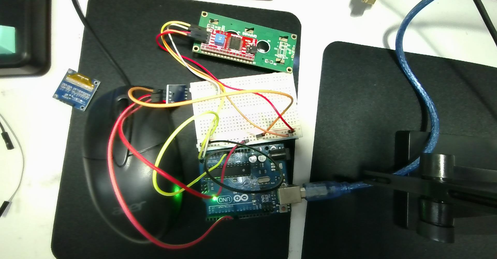

example_1029：詳細接線、3 針/4 針 DHT11 差異、三個程式庫安裝與疑難排解
最後更新時間: 2026-10-22 14:01:08 (UTC+8)
使用模型: Claude Sonnet 5.5
執行 Agent: Claude Code
對應程式碼: arduino_dht11_pin8_lcd1602_i2c_example_1029.ino
互動 HTML 筆記: arduino_dht11_pin8_lcd1602_i2c_wiring_library_guide.html✍️ 撰寫：Claude Sonnet 5.5 / Claude Code（全文皆由 Claude 撰寫；與先前 Gemini 撰寫之 Pin 7 版本筆記分開標註）
| 項目 | 本程式設定 | 說明 |
|---|---|---|
| 開發板 | Arduino Uno（或相容板） | I2C 硬體腳位固定為 A4 (SDA)、A5 (SCL) |
| DHT 資料腳 | #define DHTPIN 8 |
接 D8（注意：先前筆記為 D7，本程式為 D8） |
| 感測器型號 | DHT11 |
溫度 0–50 °C（±2 °C）、濕度 20–90 %RH（±5 %） |
| LCD 位址 | 0x27，16×2 |
若無顯示改試 0x3F |
| 取樣間隔 | sensor.min_delay / 1000，最少 1000 ms |
DHT11 庫回報 min_delay 為 2,000,000 µs → 實際 2000 ms |
| 度數符號 | lcd.print((char)223) |
HD44780 字型表中 223 (0xDF) 即 ° |
| 序列埠 | 9600 baud | 同步輸出溫濕度到 Serial Monitor |
📌 注意 本程式使用
DHT_Unified，所以必須同時安裝 Adafruit Unified Sensor（Adafruit_Sensor.h），少裝會直接編譯失敗。
| 數量 | 元件 | 備註 |
|---|---|---|
| 1 | Arduino Uno + USB 線（A–B） | 同時負責供電與上傳程式 |
| 1 | I2C LCD 1602 模組（背面有 PCF8574 小板，4 針腳） | 針腳：GND / VCC / SDA / SCL |
| 1 | DHT11 溫濕度感測器 | 3 針模組版（附小電路板）或 4 針裸感測器，見下方說明 |
| 1 | 麵包板 | 提供 5V / GND 共用軌 |
| 若干 | 公對公杜邦線；若 LCD 為排針則用公對母 | 建議紅=5V、黑/棕=GND |
| 1 | 10 kΩ 電阻 | 僅 4 針裸 DHT11 需要（上拉電阻） |
⚠️ 接線前先拔掉 USB 線，全部接好、檢查無誤後再通電，避免短路。

從照片可確認：
| 核對項目 | 應該是 |
|---|---|
| LCD 背板 SDA / SCL 排針 | 各自通到 Uno A4 / A5（不可對調） |
| LCD VCC / GND | 5V / GND（不可對調） |
DHT11 DATA（絲印 S 或 OUT） |
Uno D8（程式為 DHTPIN 8） |
| DHT11 VCC / GND | 5V / GND，依板上絲印確認 |
⚠️ 受限於照片解析度與導線交疊，我無法逐條追蹤每條線的兩端，上表請以實物逐項勾選確認；若 LCD 顯示
Error，優先檢查 DHT11 的 DATA 是否在 D8。
| 元件 | 元件針腳 | → | Arduino Uno | 建議線色 |
|---|---|---|---|---|
| I2C LCD 1602 | GND | → | GND | 黑 |
| VCC | → | 5V | 紅 | |
| SDA | → | A4 | 黃 | |
| SCL | → | A5 | 綠 | |
| DHT11（3 針模組） | - / GND |
→ | GND | 黑 |
中間 + / VCC |
→ | 5V | 紅 | |
S / DATA / OUT |
→ | D8 | 白 |
┌─────────────────────────┐
│ Arduino Uno │
│ │
DHT11 DATA ───┤ D8 5V ├─── LCD VCC ／ DHT11 VCC
│ GND ├─── LCD GND ／ DHT11 GND
LCD SDA ───┤ A4 (SDA) │
LCD SCL ───┤ A5 (SCL) │
└─────────────────────────┘
Uno 只有一組 5V 與 GND ──> 先接到麵包板紅(+)、藍(−)電源軌，再由軌分給兩個模組
5V → 麵包板紅色(+)軌；Uno GND → 麵包板藍色(−)軌。VCC → (+)軌；LCD GND → (−)軌。SDA → Uno A4；LCD SCL → Uno A5。
（Uno R3 板上靠近 AREF 的 SDA/SCL 排針與 A4/A5 內部相通，擇一即可。）+/VCC → (+)軌；-/GND → (−)軌。S/DATA → Uno D8。| 版本 | 針腳數 | 接法 | 需要外接電阻？ |
|---|---|---|---|
| 3 針模組（藍/黑色小板） | 3 | 依 3.1 表直接接 | ❌ 板上已有 10 kΩ 上拉 |
| 4 針裸感測器（藍色格柵外殼） | 4（第 3 腳空接） | 面對格柵、由左到右：1=VCC、2=DATA、3=NC（空接）、4=GND | ✅ DATA(腳 2) 與 VCC(腳 1) 之間接 10 kΩ |
⚠️ 警告 3 針模組的針腳順序因廠商而異（有的是
S + -，有的是- + S），以板上絲印為準，不要憑位置猜。VCC 與 GND 接反會讓感測器發燙、損壞。
0x27；副廠 PCF8574A 板可能是 0x3F。不確定時可燒錄 I2C Scanner（見第八章）。本程式 #include 了 5 個標頭檔，對應 3 個需要安裝的程式庫（Wire.h 為 Arduino 內建，免安裝）：
#include |
所屬程式庫 | 作者 | 是否需安裝 |
|---|---|---|---|
Wire.h |
Wire | Arduino 內建 | ❌ |
LiquidCrystal_I2C.h |
LiquidCrystal I2C | Frank de Brabander | ✅ |
Adafruit_Sensor.h |
Adafruit Unified Sensor | Adafruit | ✅ |
DHT.h / DHT_U.h |
DHT sensor library | Adafruit | ✅ |
Ctrl+Shift+I）。| 搜尋關鍵字 | 要選的項目 | 備註 |
|---|---|---|
DHT sensor library |
DHT sensor library by Adafruit | 安裝時若跳出「安裝相依程式庫」，選 Install all |
Adafruit Unified Sensor |
Adafruit Unified Sensor by Adafruit | 若上一步選了 Install all 已自動裝好 |
LiquidCrystal I2C |
LiquidCrystal I2C by Frank de Brabander | 搜尋結果有多個同名套件，認明作者 |
INSTALLED 字樣即完成。DHT sensor library、LiquidCrystal I2C、Adafruit Unified Sensor。fatal error: xxx.h: No such file or directory 即成功。| 編譯錯誤訊息 | 缺少的程式庫 |
|---|---|
fatal error: LiquidCrystal_I2C.h: No such file |
LiquidCrystal I2C |
fatal error: Adafruit_Sensor.h: No such file |
Adafruit Unified Sensor |
fatal error: DHT.h / DHT_U.h: No such file |
DHT sensor library |
flowchart TD
A(["通電 / 重置"]) --> B["setup(): Serial.begin(9600)"]
B --> C["lcd.init() + backlight() + clear()"]
C --> D["LCD 顯示 Sensor Starting"]
D --> E["dht.begin() 初始化 DHT11"]
E --> F["讀取 sensor.min_delay → delayMS"]
F --> G{"delayMS < 1000 ?"}
G -- 是 --> H["delayMS = 1000"]
G -- 否 --> I["保留 delayMS（DHT11 約 2000 ms）"]
H --> J["delay(1000) 後 lcd.clear()"]
I --> J
J --> K["loop(): delay(delayMS)"]
K --> L["讀取溫度 getEvent"]
L --> M{"isnan 溫度?"}
M -- 是 --> N["LCD 第 1 行 Error + Serial 報錯"]
M -- 否 --> O["LCD 第 1 行 Temp: xx.x°C + Serial 輸出"]
N --> P["讀取濕度 getEvent"]
O --> P
P --> Q{"isnan 濕度?"}
Q -- 是 --> R["LCD 第 2 行 Error + Serial 報錯"]
Q -- 否 --> S["LCD 第 2 行 Humi: xx.x% + Serial 輸出"]
R --> K
S --> K
完整程式亦存於
arduino_dht11_pin8_lcd1602_i2c_example_1029.ino（內容與課堂檔example_1029.txt相同）。
#include <Wire.h> // I2C 通訊（內建）
#include <LiquidCrystal_I2C.h> // I2C LCD 驅動
#include <Adafruit_Sensor.h> // Adafruit 統一感測器介面
#include <DHT.h> // DHT 基礎庫
#include <DHT_U.h> // DHT Unified 版本
// --- 設定 DHT 感測器 ---
#define DHTPIN 8 // DHT 感測器腳位接在數位腳位 8
#define DHTTYPE DHT11 // 感測器型號 DHT 11
DHT_Unified dht(DHTPIN, DHTTYPE);
// --- 設定 LCD 螢幕 ---
// I2C 位址為 0x27，尺寸為 16x2
LiquidCrystal_I2C lcd(0x27, 16, 2);
uint32_t delayMS;
void setup() {
Serial.begin(9600);
// 初始化 LCD
lcd.init();
lcd.backlight();
lcd.clear();
lcd.setCursor(0, 0);
lcd.print("Sensor Starting");
// 初始化 DHT 感測器
dht.begin();
// 取得感測器最低讀取間隔時間
sensor_t sensor;
dht.temperature().getSensor(&sensor);
delayMS = sensor.min_delay / 1000;
if (delayMS < 1000) {
delayMS = 1000; // 確保讀取間隔至少 1 秒
}
delay(1000);
lcd.clear();
}
void loop() {
// 等待感測器間隔時間
delay(delayMS);
// --- 讀取並顯示溫度 ---
sensors_event_t event;
dht.temperature().getEvent(&event);
lcd.setCursor(0, 0); // 第一行
lcd.print("Temp: ");
if (isnan(event.temperature)) {
lcd.print("Error ");
Serial.println(F("Error reading temperature!"));
} else {
lcd.print(event.temperature, 1); // 顯示小數點後 1 位
lcd.print((char)223); // 顯示度數符號 '°'
lcd.print("C ");
Serial.print(F("Temperature: "));
Serial.print(event.temperature);
Serial.println(F("°C"));
}
// --- 讀取並顯示濕度 ---
dht.humidity().getEvent(&event);
lcd.setCursor(0, 1); // 第二行
lcd.print("Humi: ");
if (isnan(event.relative_humidity)) {
lcd.print("Error ");
Serial.println(F("Error reading humidity!"));
} else {
lcd.print(event.relative_humidity, 1); // 顯示小數點後 1 位
lcd.print("% ");
Serial.print(F("Humidity: "));
Serial.print(event.relative_humidity);
Serial.println(F("%"));
}
}
COMx (Arduino Uno)。Done uploading 即成功。Sensor Starting 約 1 秒，隨後約每 2 秒更新：
text
Temp: 27.5°C
Humi: 61.0%Temperature: 27.50°C 等。| 現象 | 可能原因 | 處理方式 |
|---|---|---|
| 背光亮、只有方塊或無字 | 對比度太低/太高 | 轉動 LCD 背面藍色電位器 |
| 完全沒反應、背光也不亮 | VCC/GND 沒接好，或 I2C 位址錯誤 | 檢查 5V/GND；位址改 0x3F 或執行 I2C Scanner |
顯示 Temp: Error / Humi: Error |
DATA 沒接 D8、針腳順序接錯、4 針版缺上拉電阻 | 對照 3.1 與 3.4；DHT 剛通電請等 2 秒 |
| 數值固定不變 | 程式沒更新或感測器接觸不良 | 重新上傳；重插 DHT11 |
螢幕出現亂碼 °C |
序列埠或 LCD 直接印 UTF-8 的 ° |
LCD 已用 (char)223 避免；Serial Monitor 若亂碼屬正常顯示編碼問題，不影響 LCD |
上傳失敗 avrdude: stk500_getsync() |
連接埠/開發板選錯，或 D0/D1 有接線 | 重選埠；本專案未使用 D0/D1 |
編譯 No such file |
缺程式庫 | 見 4.4 對照表 |
I2C Scanner（找 LCD 位址）：
#include <Wire.h> // I2C 函式庫
void setup() {
Wire.begin(); // 啟動 I2C 主機
Serial.begin(9600);
Serial.println("I2C Scanner...");
for (byte addr = 1; addr < 127; addr++) { // 逐一探測 1~126 位址
Wire.beginTransmission(addr);
if (Wire.endTransmission() == 0) { // 回應 0 代表有裝置
Serial.print("Found device at 0x");
Serial.println(addr, HEX);
}
}
}
void loop() {}
NaN 或舊值；程式透過 min_delay 自動取得安全間隔。DHTTYPE 或換庫）；加入蜂鳴器/繼電器做溫度警報；以 ESP8266/ESP32 上傳雲端。Temp:/Humi:）與初始化流程略有不同，詳見 arduino_i2c_lcd1602_dht11_unified_display.md。text
C:\Users\User\Desktop\onclass\example_1029.txt 這是一個完整的程式碼，幫我撰寫詳細的接線指引以及程式庫下載方式example_1029.txt（DHT11 接 D8、I2C LCD 0x27）新增詳細接線表、3 針/4 針 DHT11 差異、程式庫（LiquidCrystal I2C、DHT sensor library、Adafruit Unified Sensor）的 IDE 與 ZIP 安裝流程、流程圖、驗證步驟與疑難排解；並將程式存為 .ino。